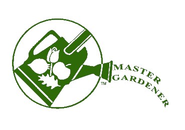
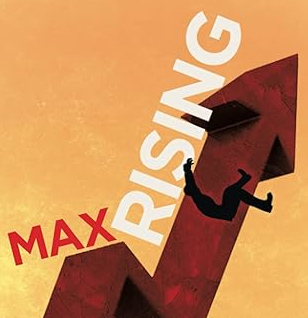
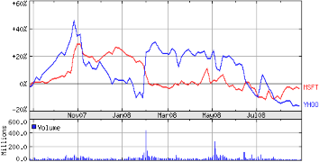
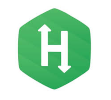
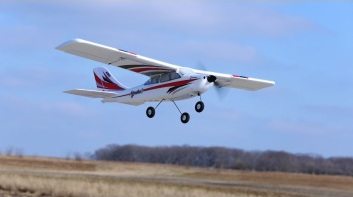
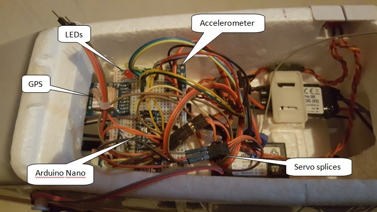
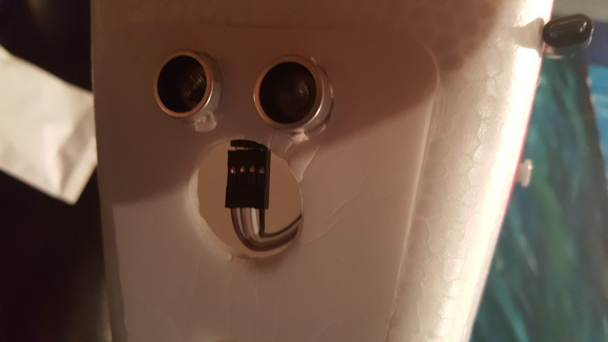
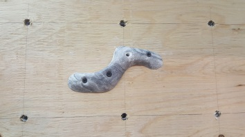
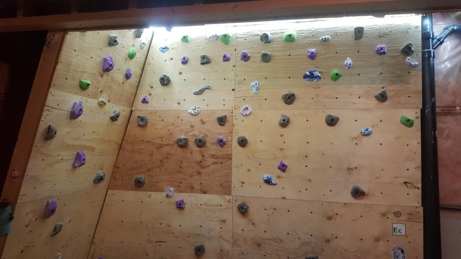
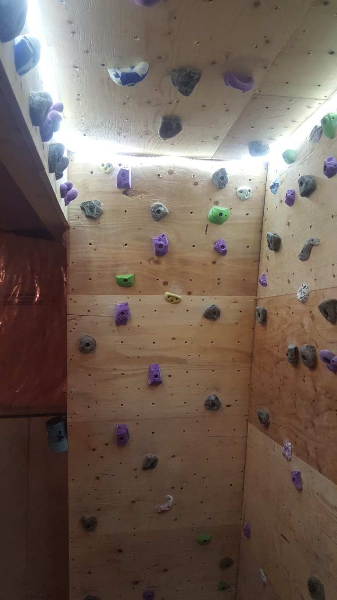

I'm a software engineer with over 25 years of experience mostly buildiing the full stack of web applications but I'm generally better with the server side. I have a degree in math from the University of Waterloo, and a curiousity that won't leave me alone. See below for some of the things I've worked on outside of work. One thing I am not is a graphic designer. If anything I work on approaches visual beauty, it is entirely coincidental. Some things that don't appear below, but that I like to think about and work on include data science, machine learning, and artificial intelligence (both the narrow and strong versions). I can also be a karaoke night ringer when needed.
I finally left Warner Music after 4 years there because I decided I needed to experiment with some ideas about AI. This began with the suspicion - which I still have - that a strong AI can be developed from the incremental development of agents situated in a 'real world', or at least a simulation of one. I started learning about spatial cognition, and from there used physics simulation software - starting with JBox2D, and then transitioning through MatterJS to finally arrive at PlanckJS - to create a simulation that included edible elements that contained various nutrients (some toxic) and ambient districts, in which an agent could freely move within the restrictions of its physiology and metabolismn, and sense the environment via whiskers and body contacts (plus a nose for sniffing). I eventually converted the work into a kind of game, which can be found here.
 My parents were avid gardeners, and although I've always had a strong appreciation for plants and the ourdoors, I didn't think much about gardening until about three seconds after getting a gardening space of my own. So, after two years in training and three horticulture courses at U of Guelph I was accepted as a full member of the Lake Simcoe South chapter of the Master Gardeners of Ontario. It feels weird to use that title on myself because other members in the group know so much more than me.
 So, I wrote a novel. I am not a novelist. My novel didn't win any awards. It was written on the occasional evening and weekend over the course of about 6 years and was self-published. The handful of generous souls that read it and told me so were kind in their opinions. If I may say myself, I think narrative parts are entirely readable, and maybe even fun. The 'essay' parts of it are kind of dense, and could probably use additional exposition, but then, as mentioned, I'm not a novelist. Ultimately I was able to write down a lot of things that wouldn't otherwise get out of my head, and now with my mind largely excavated, I am unlikely to ever do that again.
 I literally woke up in the middle of the night with this realization; crypto exchanges are arbitrage opportunities. And not between exchanges, but within a single exchange. Any exchange where loops can be created through 3 or more markets would work. And with the thousands of exchanges there are in the world, there might actually be some money to be made. Well, that turned out to be true, and even better, pretty much every exchange there is offers an API where this can be automated. Which I did. And it worked. I had 7 EC2 instances running it, costing a small fraction of the profits. After about 3 months though, it appears that the exchange I was using started doing this themselves, and since you can't compete with the exchange itself, the profits disappeared.
I joined the Mannabase (nee Grantcoin) project because I loved both the idea of cryptocurrency, and universal basic income. The project is now defunct, but we had built a full web site backed by multiple wallet servers.
 I became a little obsessed with this site for a while, being in a space between contracts. Check out my algorithms ranking. I'm also ranked #1 in the Java category ... along with 798 (ATOW) other people.
 Becoming more interested in electronics, I built a flight data recorder for a remote controlled airplane. Code for this project can be found here.
 I've always had a fascination for remote controlled stuff, especially airplanes. And so, when I finally had an excuse to buy one it was a bit of a dream come true. This project was intended to be a flight data recorder - like a black box on regular airplane, but smaller. When I was finally done, the image to the right is what it looked like. All of this plugged into a Raspberry Pi that was also placed into the payload area. Everything ran off of the airplane battery. Sensor input included:
The Arduino Nano was needed for its analog and digital inputs. It communicated with the accelerometer via I2C, and with the RaspPi via RS232. The GPS was connected directly to the RaspPi, also with RS232. Data was written to a TinyTSDB database on the RaspPi. Operating state was signalled through the LEDs using colour and blinking patterns.
 This is the ultrasound distance sensor, mounted to the bottom of the plane.
I jumped on the Sudoku bandwagon around the time that they came out. It's a great puzzle, and an even greater way to waste time. Eventually, like most other things, I decided it would be much more convenient for a computer to solve them for me, so I created a solver. This project was originally written in Java, but lacked a UI and so was ported to React for showcasing here. The original in addition to 9x9 models also allowed for 4x4, 16x16, and 25x25 models. Code for this project can be found here.
The default puzzle that is shown was rated "diabolical", and it's pretty tough to solve by hand. The solver does it easily though. The same can happily be said for the so-called world's hardest sudoku. I had to make some small changes to the code to handle it — it was designed after I wrote this code I think — but it gets solved just fine.
The puzzle is editable, so go ahead and enter the one from today's paper.
 Not a tech project, but it was fun anyway. I was allocated a bit of space in the basement by my wife to build a rock climbing wall. It includes a 15° incline wall, a flat wall, ceiling holds, a campus wall, and LED lighting around the top. (It's in a basement after all.) There are also some cleverly placed holds on the side of the incline. The kids love to swing from the campus holds.

